Projects I worked on...
Here you'll find all projects I've worked on during my course. For context, I had a class where we had to make a game as a group for the semester. Did this 4 times in total, with each game being more complicated than the last. I'll explain each game as we go!
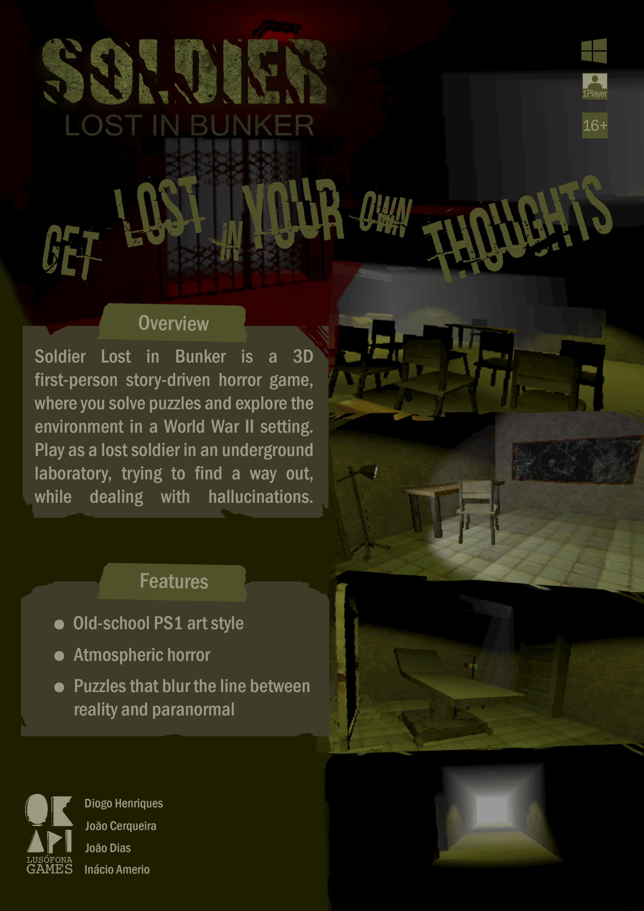
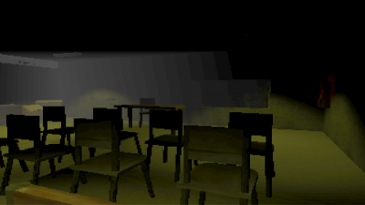
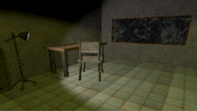
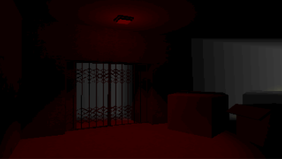
Soldier Lost In Bunker
Project done on the second year, first semester of my course. A first-person horror game with puzzle elements, where the main appeal of it was the atmospheric horror and PS1-era graphics. Game features an inventory system with a crafting system as well, a lot of the puzzles had this intertwining logic in order to progress further into the game. It's quite short, but we tried our best with making it spooky, especially with our own self-made foley sounds in order to really sell the spooky ambience. Beyond that, my task in coding this game was a challenge, especially with dealing with interactives, inventory items, and so on. Dealing with sequential items and so on was nice, especially since one of the final puzzles allows the player to get the items in whichever order they prefer.Since this was our first 3D project, our art skills were low enough to go with a low-poly aesthetic. By the usage of this free-use shader, we managed to hit what we wanted with the graphics. Overall, very fun to work on coding-wise and art-wise, since I had to implement the shader, the level-making and some 3D objects as well.
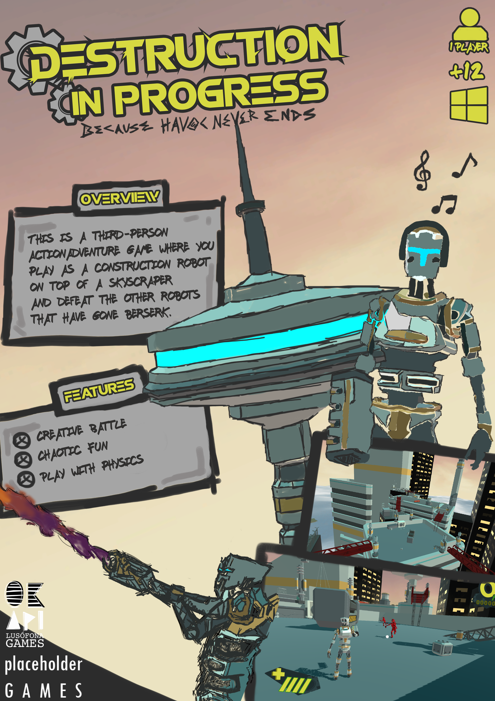
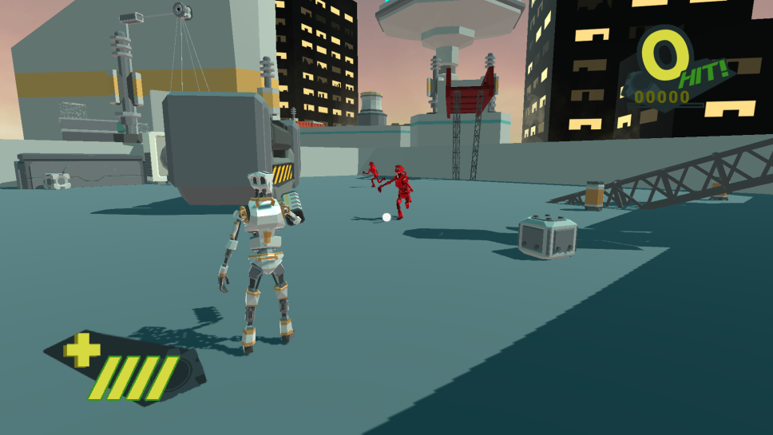
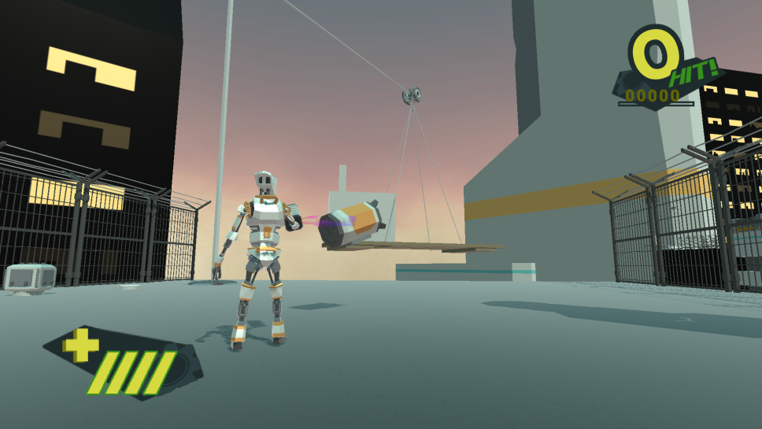
Destruction In Progress
Second year project, second semester. Third-person action game with physics as the main appeal. It was my first time doing a game with physics being involved heavily, and boy, I learned a lot. It was certainly difficult grasping the usage of physics as a mechanic for the game, since the player has to use a gravity gun in order to use momentum from throws, in order to destroy enemies. The game's pacing was based around arenas: the player enters a room with crates to throw and enemies spawn. This was also the first time dealing with AI too, and the AI in this project was a simple patrol-to-find-player, which would then chase to hit with melee attacks. The game includes a Save/Load system too, which had auto-saves in checkpoints so that the player wouldn't lose progress. In the end, there's a boss fight where the player needs to destroy generators in order to finish.Physics are hard, but this project was absolutely fun to work on. The fun in using crates to crash into enemies that ragdoll was quite the rewarding experience that appeased to everyone! My main tasks were coding the entire game, so the Save/Load system was by me, checkpoints, AI-logic, physics, etc.
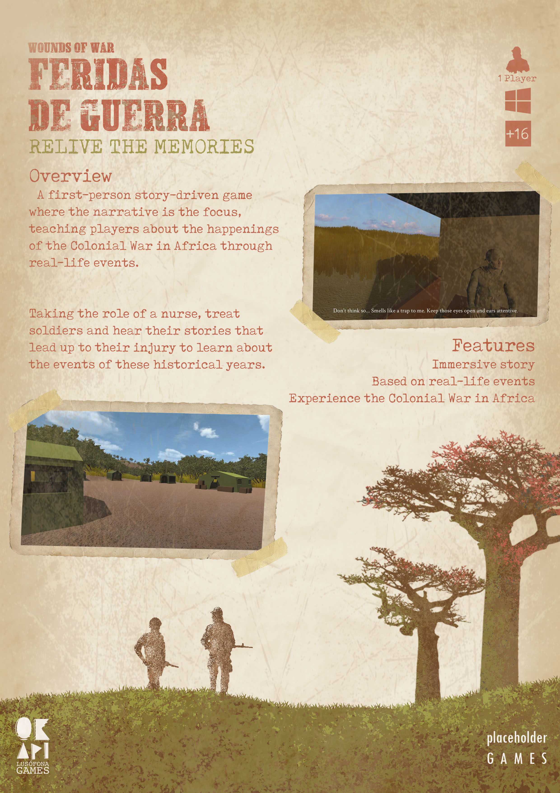
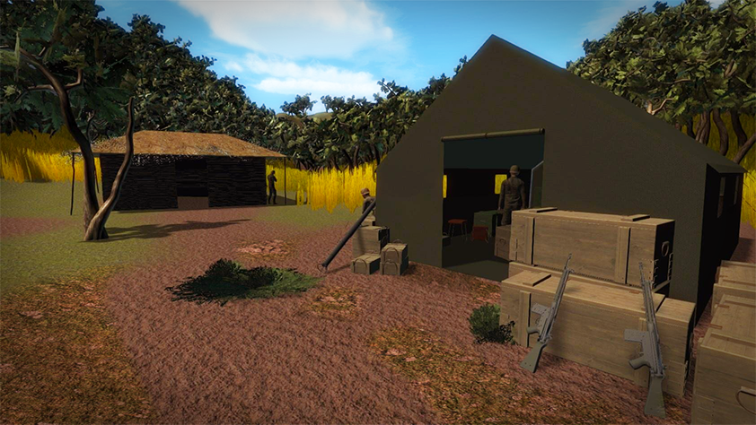
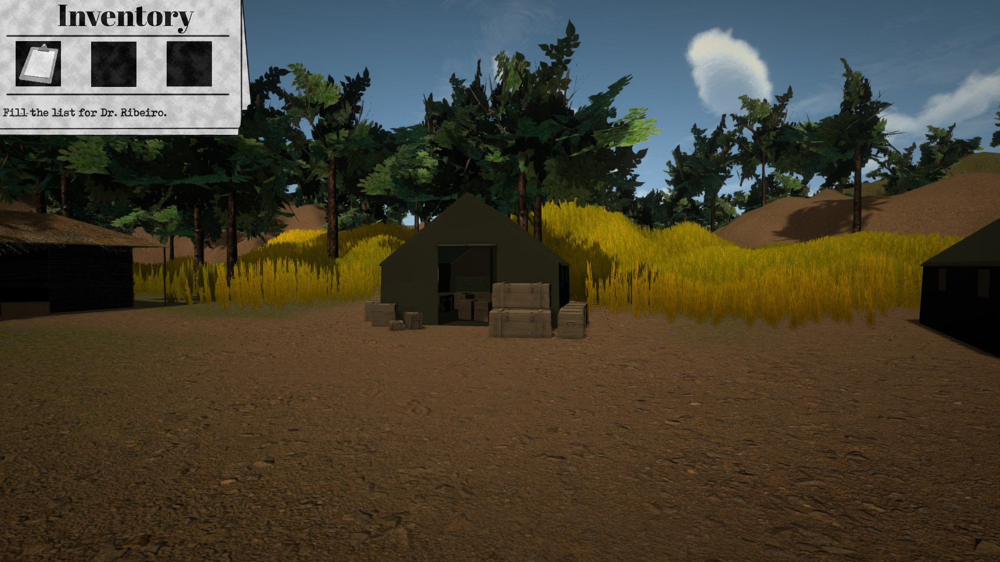
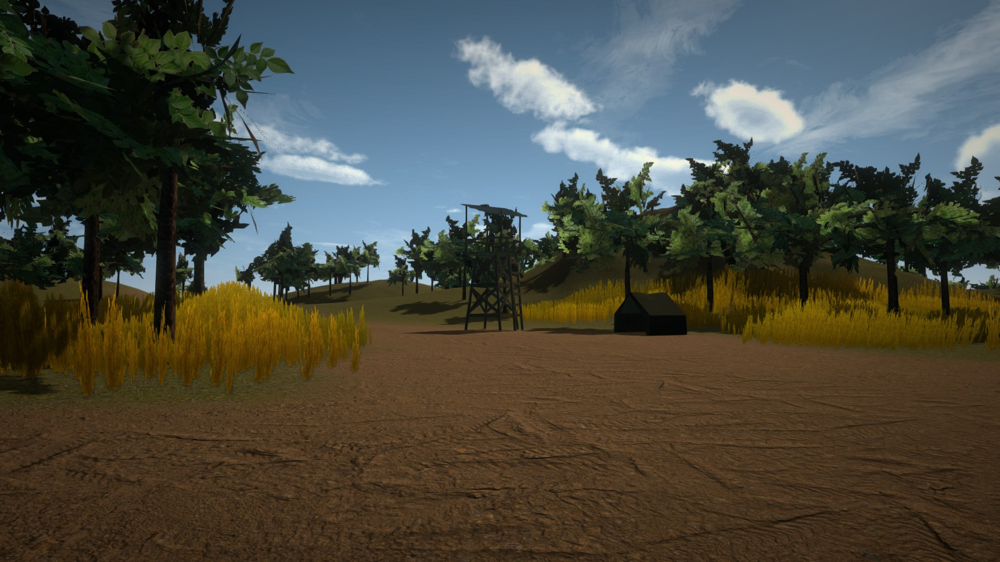
Feridas De Guerra (Wounds of War)
Third year project that lasted both semesters. First-person narrative "walking simulator" game that tells the story of a soldier during the Colonial War. With this being the final project to wrap the course up, I applied all the knowledge gained. The game itself doesn't have any complicated mechanics, the main focus being just a narrative game with a focus on characters and story. This time we included voice acting from both myself, friends and family. I also added subtitles to the game, especially English subtitles as the audio was all in Portuguese. The game featured an inventory system, since to keep the experience active, we had the player pick up items when requested by our characters. Beyond that, there isn't much to this game. I learned how to use Unity's Cinemachine to make cutscenes, the timing of audio and subtitle as well with other design philosophies in order to code the game proper.Since this was the last project for the course, we had to upload it online and market it. In the end, we got a lot of eyes and publicity as well as feedback. Unfortunately, we couldn't continue to make it an actual commercial project. We did, however, make a VR version to be used in Lusófona's laboratories for experiences. You can download the game here .